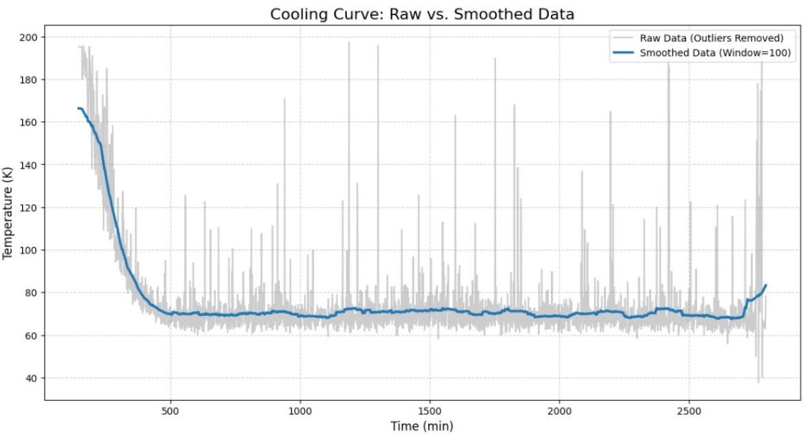
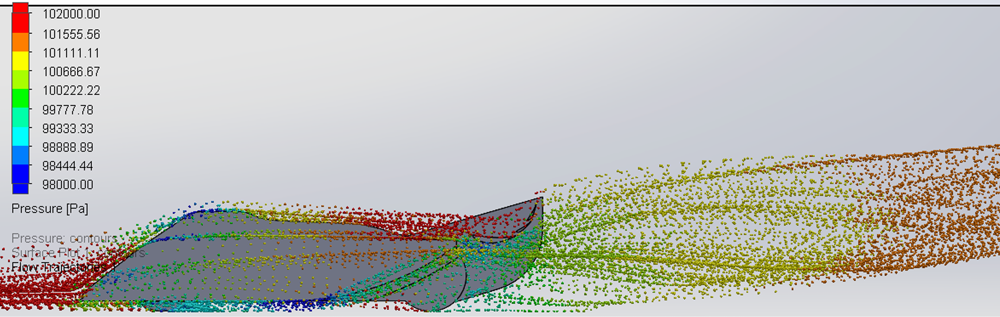
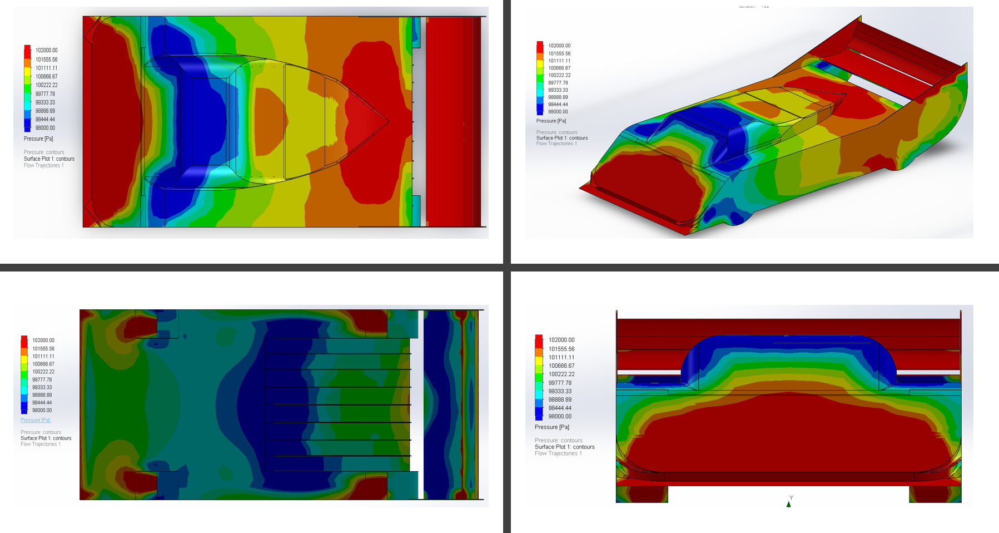
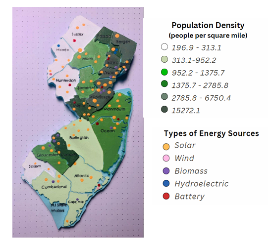
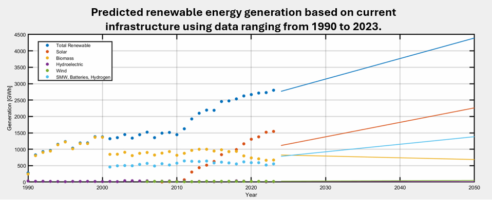
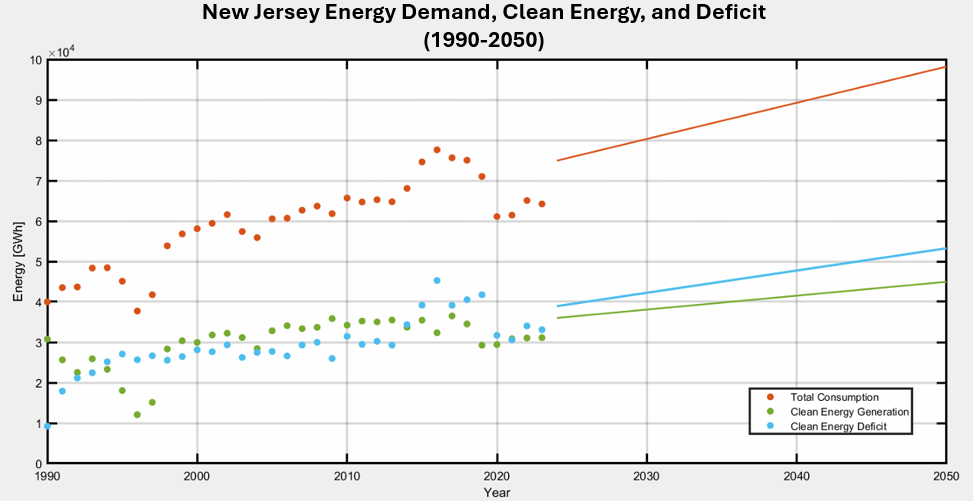
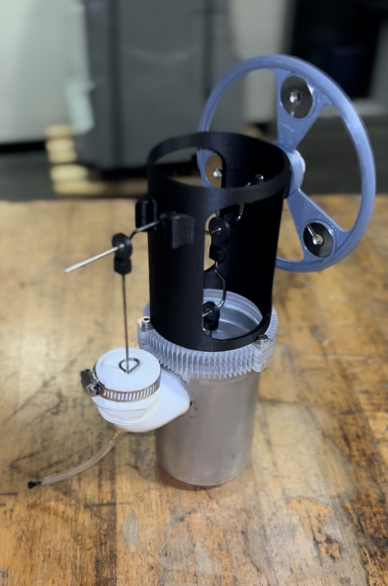
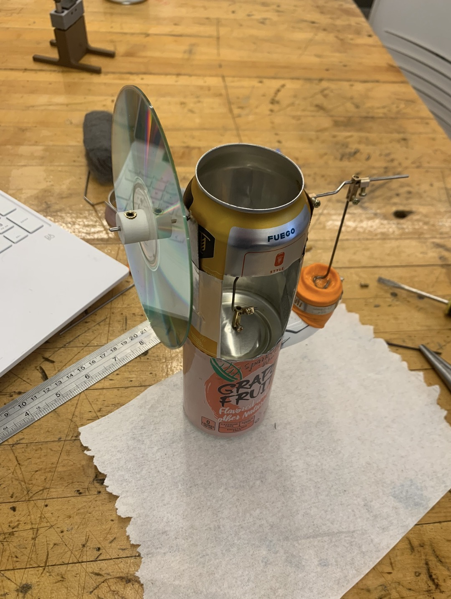

Projects
Polymer Composites for Naval Application ▼
Design and improvement of cryogenic testing environments for insulation materials used in naval high-temperature superconducting cables. This involves optimizing an existing cryogenic system, designing, simulating, and building a new environmental chamber, and preparing/testing materials.

A previous team developed a liquid nitrogen based cryogenic chamber capable of reaching approximately -70°C using a copper coil heat exchange. After successful testing, it became clear that lower operating temperatures and improved system control were required.
A new cryogenic environmental chamber was designed to:
• Maintaining an airtight seal while allowing tensile testing
• Mount directly on an optical table and tensile machine via a steel frame
• Integrate internal airflow circulation
• Include observation capability for future Digital Image Correlation (DIC) testing
The fan prototype operated up to 600 RPM, significantly improving airflow inside the chamber, and increasing thermal uniformity. (Test to see how much colder chamber gets with/without fan).

Should this picture be fan simulation instead, or should i have both here
Additionally, I created an arduino software to read and record thermistor values for the gas helium system. The system logs data over extended cooling periods and exports data for Python based analysis
• Previously, system would be run for several days, due
to unknown length of time required for cooling
• Arduino setup logged data over a cooling period, and a Python
script cleaned the data, giving a cooling curve
• System reached a steady state at about -200 C in under 10 hours

Aerodynamics of a High-Performance Vehicle ▼
FIX THE NUMBERS IN HERE Designed and optimized a vehicle body in SolidWorks Flow Simulation to maximize downforce while maintaining drag below 950 Lb at 150 mph.

This project focused on aerodynamic optimization of a high-performance vehicle body. The design constraint required drag to remain below 950 Lb at 150 mph while maximizing aerodynamic downforce.
The strategy emphasized underbody flow acceleration, rear diffuser geometry, and multi-element spoiler design. SolidWorks Flow Simulation was used iteratively to refine geometry and evaluate lift-to-drag performance.
Final results at 150 mph:
• Drag: 895 Lb
• Downforce: 2392 N
• Lift-to-Drag Ratio: 2.67
Hand calculations validated CFD results, including stagnation pressure and drag predictions. Velocity sweeps confirmed expected quadratic scaling of aerodynamic forces and cubic power growth.

Renewable Energy Transition Analysis – New Jersey ▼
Comprehensive evaluation of New Jersey’s energy system with emphasis on expanding solar generation to meet future demand.

This project analyzed the current energy infrastructure of New Jersey and evaluated pathways for transitioning toward increased renewable energy generation, with a focus on solar power expansion.
The study examined energy production sources, demand growth projections, environmental impacts, and long-term grid feasibility.
Findings indicated that large-scale solar expansion represents the most viable pathway toward long-term decarbonization, though grid modernization will be necessary to support distributed generation.


Stirling Engine Rebuild ▼
Construction of a functional stirling engine from scrap components, and afterwards, improving on the design for increased efficiency and power.

This project began with the construction of a stirling engine with scrap components such as empty cans, CD's and PVC tubing. This was completed by following instructables to ensure the base model functions properly. The second half of the project involved redesigning the base engine to improve the output of the engine.
The improvements to the design include a heatsink machined from aluminum, bearings for drive shaft & connecting rods, a 3D printed top body for easier construction, as well as an improved flywheel.
The improved engine reached a power output of ____ Watts, compared to the initial design, which peaked at _____ Watts.

Digital Scale ▼
this is a placeholder
this is a placehodler
this is another placeholder
this is another placeholder